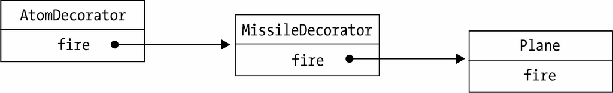

首先要提出来的是，作为一门解释执行的语言，给JavaScript中的对象动态添加或者改变职责是一件再简单不过的事情，虽然这种做法改动了对象自身，跟传统定义中的装饰者模式并不一样，但这无疑更符合JavaScript的语言特色。代码如下：
var obj = {
name: 'sven',
address: '深圳市'
};
obj.address = obj.address + '福田区';
传统面向对象语言中的装饰者模式在JavaScript中适用的场景并不多，如上面代码所示，通常我们并不太介意改动对象自身。尽管如此，本节我们还是稍微模拟一下传统面向对象语言中的装饰者模式实现。
假设我们在编写一个飞机大战的游戏，随着经验值的增加，我们操作的飞机对象可以升级成更厉害的飞机，一开始这些飞机只能发射普通的子弹，升到第二级时可以发射导弹，升到第三级时可以发射原子弹。
下面来看代码实现，首先是原始的飞机类：
var Plane = function(){}
Plane.prototype.fire = function(){
console.log( '发射普通子弹' );
}
接下来增加两个装饰类，分别是导弹和原子弹：
var MissileDecorator = function( plane ){
this.plane = plane;
}
MissileDecorator.prototype.fire = function(){
this.plane.fire();
console.log( '发射导弹' );
}
var AtomDecorator = function( plane ){
this.plane = plane;
}
AtomDecorator.prototype.fire = function(){
this.plane.fire();
console.log( '发射原子弹' );
}
导弹类和原子弹类的构造函数都接受参数plane对象，并且保存好这个参数，在它们的fire方法中，除了执行自身的操作之外，还调用plane对象的fire方法。
这种给对象动态增加职责的方式，并没有真正地改动对象自身，而是将对象放入另一个对象之中，这些对象以一条链的方式进行引用，形成一个聚合对象。这些对象都拥有相同的接口（fire方法），当请求达到链中的某个对象时，这个对象会执行自身的操作，随后把请求转发给链中的下一个对象。
因为装饰者对象和它所装饰的对象拥有一致的接口，所以它们对使用该对象的客户来说是透明的，被装饰的对象也并不需要了解它曾经被装饰过，这种透明性使得我们可以递归地嵌套任意多个装饰者对象，如图15-1所示。

图 15-1
最后看看测试结果：
var plane = new Plane();
plane = new MissileDecorator( plane );
plane = new AtomDecorator( plane );
plane.fire();
// 分别输出： 发射普通子弹、发射导弹、发射原子弹